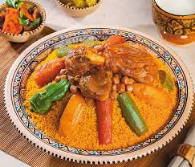

Couscous

Description
Découvrez la recette de Couscous tunisien à faire en 50 minutes.
Ingredients
- Le ras el-hanout.
- Le mélange de quatre épices.
- Le cumin.
- Le piment doux ou fort (vous pouvez vous en passer si vous n'aimez pas les plats épicés).
- Dans un faitout, faire dorer les oignons avec le poulet et les boulettes.
- Ajouter les légumes coupés en cubes et les pois chiches.
- Couvrir d'eau.
- Mettre le concentré de tomates, le ras el hanout, la harissa et l'ail émincé.
- Laisser mijoter une heure à couvert et à feu moyen.